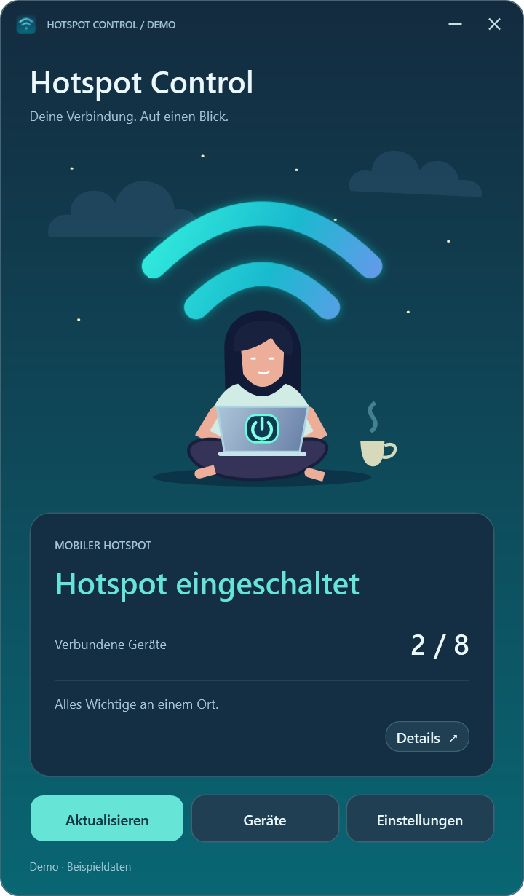

Windows 11 24H2+ · x64
Hotspot Control
Steuert den mobilen Windows-Hotspot und zeigt Geräte sowie Netzwerkeinstellungen.
Release · 0.3.0Vor dem StartKompatibler WLAN-Adapter; Windows- oder Organisationsrichtlinien können Funktionen einschränken. .NET ist enthalten.


So funktioniert es
- WLAN-Adapter prüfen
- Hotspot einrichten
- Geräte anzeigen
Erste Schritte
SHA-256 prüfen, ZIP vollständig entpacken und HotspotControl.App.exe öffnen. Keine separate .NET-Installation nötig.